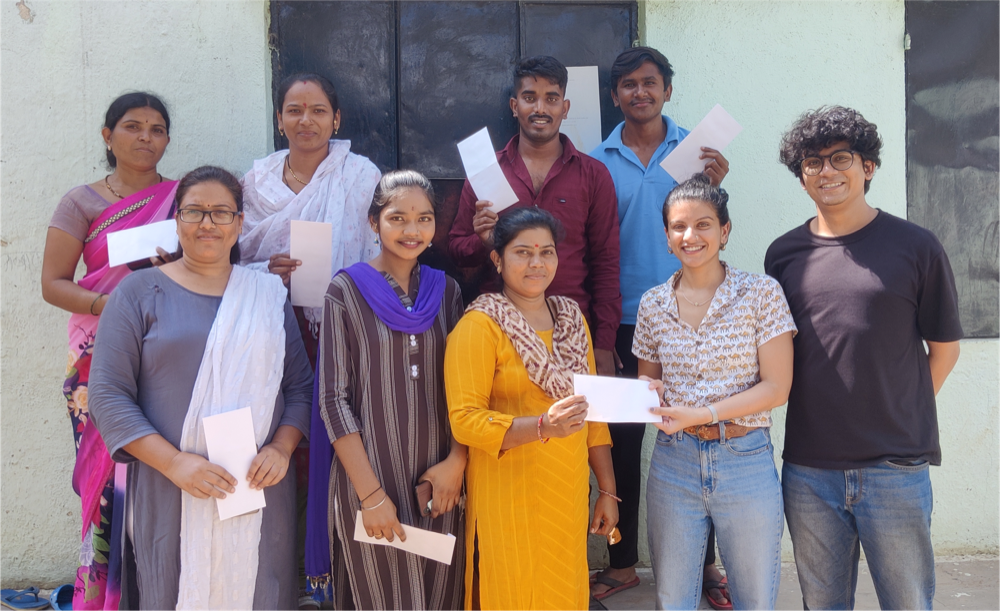
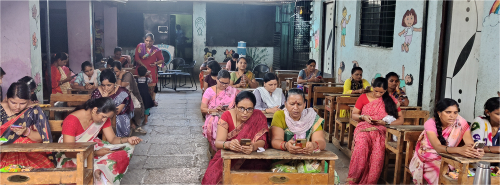

Low-income individuals often face constraints in skill development due to long working hours for low wages. This dynamic perpetuates a cycle where the need for immediate income limits opportunities for upskilling in vital areas like financial literacy, which could otherwise catalyze their upward economic mobility. Recognizing the potential of crowdwork as a growing labor sector in India, our study aimed to explore whether it could serve as a conduit for financial education. Specifically, we investigated if low-income individuals could acquire essential financial concepts while earning supplemental income through generating speech data in Marathi, a language spoken by a large community yet considered low-resource in language technology.
We worked with a Marathi-speaking stone quarry worker community in Wagholi, a semi-urban area near Pune, India. The project's centerpiece was a nine-module financial literacy curriculum, delivered through a smartphone app in a story-based format. This method, grounded in an 'education-through-entertainment' approach, was designed to engage workers as learners, ensuring their active involvement while imparting crucial financial concepts. Each lesson was accompanied by comprehension quizzes and open-ended questions to encourage self-reflection on the learned concepts. The two-week-long financial literacy program was implemented using the Karya digital work platform, allowing us to record pre- and post-intervention financial knowledge of the participants. In addition to evaluating the intervention's educational efficacy, we also assessed the quality of the speech data generated.
Our study employed a mixed-method approach to assess the impact of a financial literacy program on a community of stone quarry workers in Wagholi, Pune. We collaborated with Parinaam Foundation, Santulan (a local NGO working for the rights of the stone quarry community in Pune) and Karya, a digital work platform, to develop and deploy a Marathi-based financial literacy curriculum. We developed a novel framework for learning through data annotation of domain-specific data. Our work began with conducting contextual inquiries at financial literacy workshops in Bangalore. The insights gained were pivotal in designing and adapting the curriculum for a digital work task. This process was critical in ensuring a balance between the annotators' needs and the quality of data collected.

The curriculum, developed using the Sabido Methodology, was story-based and focused on core financial concepts. Participants engaged with the curriculum through the Karya platform, reading and recording sentences from the modules, which also facilitated the generation of valuable labelled speech data. Each module was followed by a comprehension quiz and open-ended questions, enabling revision and reflection of the content participants had engaged with. We recruited 55 participants, emphasizing those with low levels of financial knowledge. The study utilized a within-subject pre-post test design for 55 participants, complemented by semi-structured interviews with 14 participants post-intervention. This mixed-methods approach enabled us to quantitatively measure program efficacy and qualitatively understand participant responses. The efficacy was gauged through tests consisting of MCQs related to each module, administered before and after the program. Additionally, comprehension tests and task completion metrics were analyzed to assess participant engagement and learning progress.
The results of our study were highly promising, demonstrating a substantial impact on financial literacy among participants. On average, there was a 41.6% improvement in participants' knowledge of financial concepts following the intervention. This significant increase was further evidenced by high scores in comprehension tests, where participants achieved an average of 82.5%, indicating a strong grasp of the material they engaged with. The intervention not only enhanced their understanding but also fostered a sense of community among the participants, as observed through behaviors like peer support and knowledge sharing. Additionally, interviews conducted post-intervention suggested a shift in participants' financial behaviors, moving towards more informed and responsible financial practices. Notably, our findings highlighted the dual motivators driving participant engagement in the project: the intrinsic value of learning new and important skills and the extrinsic benefit of financial incentives. These results underscore the effectiveness of integrating educational content into crowdwork platforms, particularly in the realm of financial literacy.